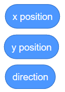
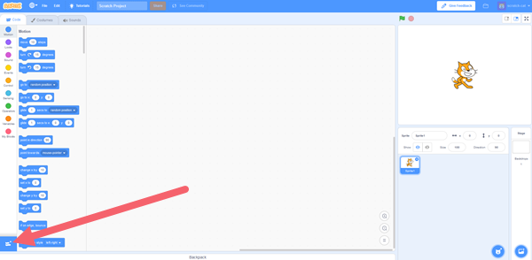
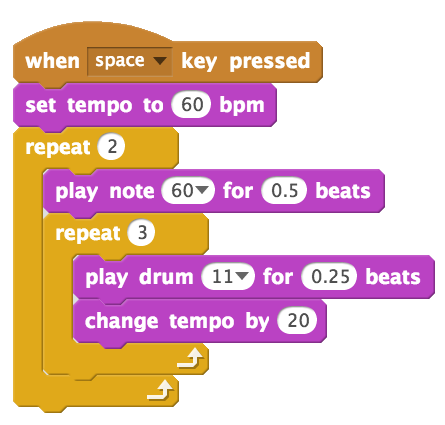
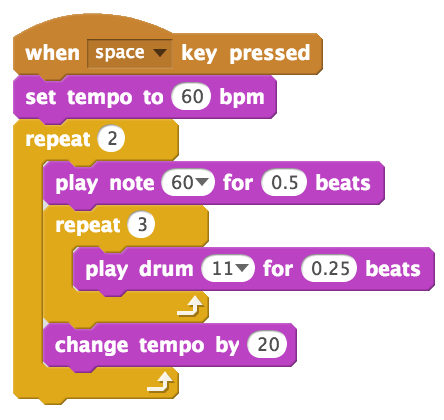
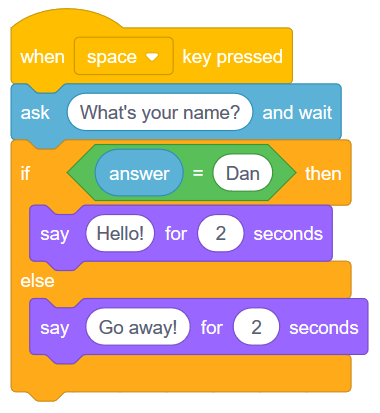
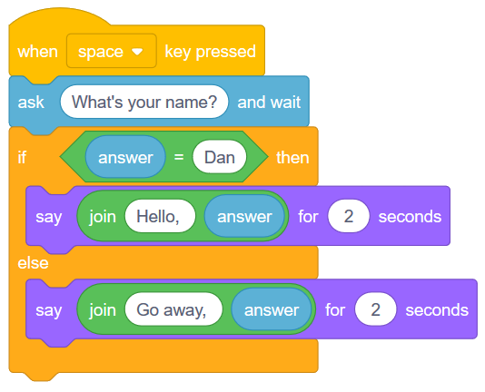
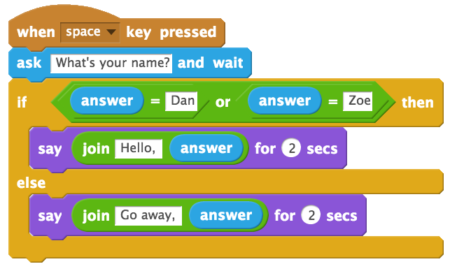
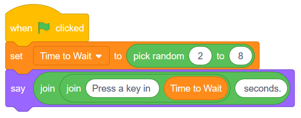
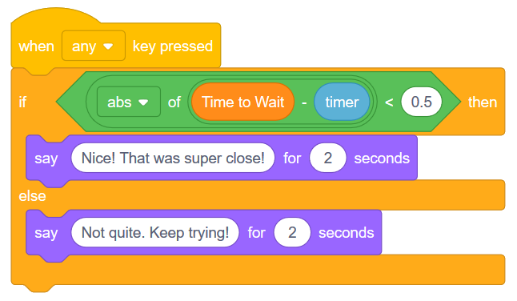

9. Built-In Variables (Tempo, Answer and Timer)¶
Quick Overview of Day
Explore some of the built-in variables available in Scratch, including tempo, answer and timer. Introduce the join operator to concatenate strings, and the abs operator to calculate the absolute value of a number.
CS20-CP1 Apply various problem-solving strategies to solve programming problems throughout Computer Science 20.
CS20-FP1 Utilize different data types, including integer, floating point, Boolean and string, to solve programming problems.
CS20-FP2 Investigate how control structures affect program flow.
If you’d prefer to watch a video, the following video demonstrates the same ideas I’ve described in text below.
9.1. Identifying Built-In Variables¶
We have been using variables to keep track of values that change throughout our program. When we built the dodging game, we created a variable for both the basketball speed and the watermelon speed, since both sprites changed speed throughout the duration of the game. Creating our own variables is incredibly powerful, but for certain things, Scratch provides us built-in variables that we can use. When we create a variable, we can use it by dragging in a block from the Data tab that looks like this:

If we look through the tabs of blocks, we can find many other blocks that look similar to this. For example, in the Motion tab, we find three built-in variables:
Throughout this section, we will explore some of the built-in variables available in Scratch.
9.2. Tempo¶
Note
To allow your Scratch character to access the Music tab, you may need to click on the “Add Extensions” button (on the bottom left of the screen), then click on the Music button.
One of the built-in variables that Scratch allows us to use is a tempo variable. You can find it in the Music tab. To display the temp on the stage, you can click on the check box beside the variable name in the Music tab. We can either set the tempo to a specific number of bpm (beats per minute), or change the tempo by some amount. Consider the code below:
Before running this code yourself, try to figure out what the value of tempo will be after the code is executed. You can see that the tempo will be reset to 60 bpm at the start of the code, then we change the tempo within the nested loop by 20 bpm. How many times will the “change tempo by 20 block” be called? Since there is a repeat 3 block inside a repeat 2 block, the “change tempo” block will be called 6 times. We can therefore determine that the value of tempo after the code has executed will be 180 bpm (since we need to add 20 bpm 6 times).
9.2.1. Check Your Understanding¶
scratch-variables2: What would the value of tempo if we were to move the “change tempo by 20” block as shown?
9.3. Answer¶
If we want to get information from the user, Scratch gives us a useful “ask and wait” block that you can find in the Sensing tab. We can react to the user input by checking if they entered a certain value. For example, in the script below, we say Hello if the user enters the name Dan, and Go away! otherwise.
We can improve the script above by using the “join block”, which you can find in the Operators tab. The join block allows us to squish two things together (often called concatenation in Computer Science parlance). If we use the join block as follows, we can say “Hello, Dan”, or “Go away, somebody”, where somebody will be whatever name the user entered.
If we would like to allow more than one name to trigger the Hello message, we can use the “or block” found in the Operators tab. This allows us to check for more than one condition. The script below will say hello to either Dan or Zoe, but will say go away to anyone else.
9.4. Timer¶
Let’s create a simple game, in which the user has to try to press a key after a certain number of seconds. If the user is close, congratulate them. If they are not close, tell them to try again.
Since we don’t want the wait time to always be the same, we need to create a variable that we can use instead of a specific number. After creating the variable, have the computer pick a random number to use for the wait time, and tell the user how long they need to wait.
To show the built-in timer variable on the stage, open the Sensing tab and click the checkbox beside the timer variable. Although you don’t want to have the timer on the stage in the final version of the game, it can be helpful while creating the game. Notice that every time you click on the flag, the timer resets to 0. If you wanted to begin the game using something other than the flag being clicked, you could use the “reset timer” block in the Sensing tab.
In order to determine if the user is “close enough” to the time to wait, we need to consider what happens if they are slightly above, or slightly below the wait time. For example, assume that the wait time was supposed to be 5 seconds. We would like the user to “win” if they press a key within half a second of the wait time. If the user presses the key half a second too late, at 5.5 seconds, we can simply subtract the timer value from the wait time:
However, if the user presses the key half a second too soon, and we perform the same subtraction, we will get a negative number:
What we would really like to do is simply ask if the time clicked is less than half a second away from the expected wait time. To do this, we need to convert the negative answer below into a positive value. In math class, you have learned a useful operation that does just that: absolute value.
We can use absolute value in Scratch to find the distance away (always positive) the timer is from the wait time. You will find the absolute value operator in the Operators tab, though it will initially look like this:
Click on the word sqrt, and select abs, which is short for absolute value. We can now create code that executes when a key is pressed, and checks to see if the user pressed a key within half a second before or after the expected wait time.
Note
An nice extension to this game is to have the game tell the user how far away they were from the expected wait time. If you do this in a separate say block after the initial “Nice” or “Not quite” blocks, you may need to create another variable to keep track of when the key was actually pressed.
9.5. Practice Problem¶
Work on your current Scratch assignment, for any remaining time.
Note
If your teacher did not assign you a project, you should explore the Scratch website to discover what types of projects are possible. Now try to create the most impressive project you can, making sure you demonstrate your understanding of the main topics shown so far (broadcasts, repetition, if/else, and variables).